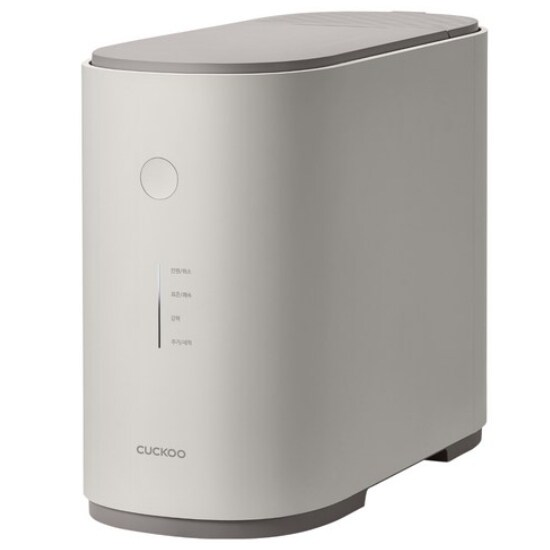

쿠쿠
브랜드 정보 확인 중
추천 제품 2종 2026.11.24 TUE · No.003 기준

쿠쿠 에코웨일 건조분쇄 음식물처리기 CFD-ENL201DCGW353,900원주방 · 정가 대비 45%↓ · 쿠팡 리뷰 2,395 · 소싱 점수 3.0 쿠쿠 IH 압력밥솥 6인용 CRP-FHXB0610FD360,000원주방 · 정가 대비 31%↓ · 쿠팡 리뷰 3,858 · 소싱 점수 3.0
쿠쿠 IH 압력밥솥 6인용 CRP-FHXB0610FD360,000원주방 · 정가 대비 31%↓ · 쿠팡 리뷰 3,858 · 소싱 점수 3.0
관련 뉴스
- 하이마트 블프, 11월 30일까지
삼성·LG 김치냉장고, 쿠쿠 전기밥솥 등에 캐시백·즉시 할인. 온라인 1만 원 쿠폰 배포는 15일에 끝났습니다.
2026.11.06 · SBS Biz - 쿠쿠·쿠첸, 가열식 가습기 맞대결
쿠쿠 CH-J301FW는 압력밥솥 압력 제어 기술과 안전장치 7종, 3L 물통으로 최대 11시간. 쿠첸은 9월 가열식·초음파식 2종을 냈습니다.
2026.11.10 · 코리아헤럴드 비즈
가격·순위는 2026-11-24 다나와 공개 자료 기준이며 판매처마다 다를 수 있습니다. 각 제품 페이지에 출처가 있습니다.